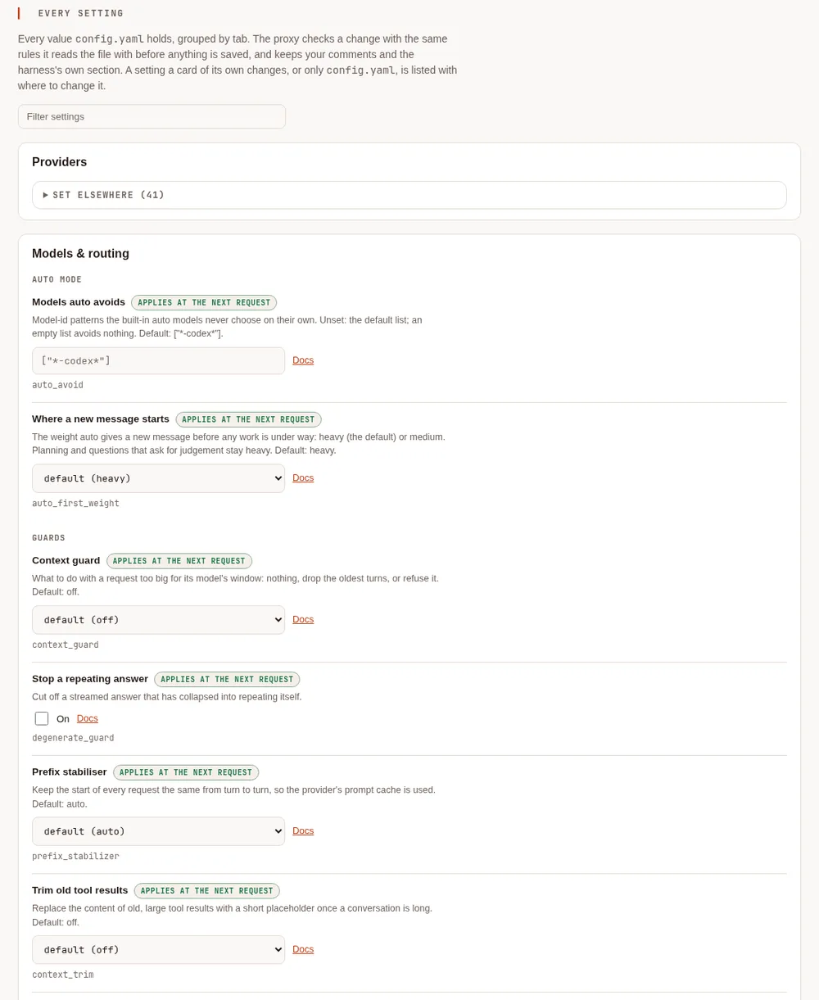
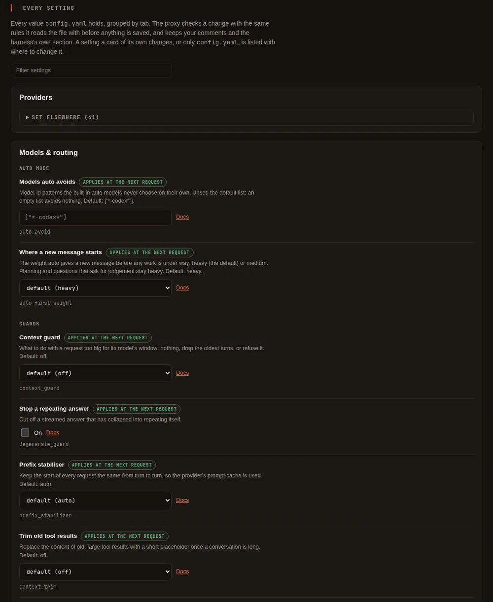

Proxy settings #
On this page
- In plain words
- Settings at a glance
- Listeners and ports
- Providers and models
- Caching
- Images and browser snapshots
- Cost visibility
- Fallbacks
- Guards
- Budgets
- Alerts
- People and teams
- Chained proxies
- MCP hub (experimental)
- Limits and hosts
- The usage log
- Search by meaning
- The setup page, card by card
- Single sign-on for the setup page
- Observability export
- Containers and replicas
- Commands
- Response headers
- Files and environment
This is the complete list of what you can change on the proxy: the cards on its setup page, the keys in
config.yaml, the commands, and the response headers you can read. For a guided tour, read
The proxy and its setup page first.
The proxy and the harness share one config.yaml. A save on the setup page keeps the harness: section and any
setting the proxy does not know, and changes only the lines of the settings you changed, so your comments stay.
Adding or removing a provider leaves the other providers as you wrote them; moving a provider up or down the list
writes the provider list in the proxy's own layout, without its comments. Saves from the harness, the setup page
and maple-proxy commands wait for each other, so none undoes another's change.
Every setting has a Helps column, because each one exists to serve one or more of three goals:
- Efficient: fewer tokens or AI units for the same work.
- Efficacious: the work stays as good as it would be without the setting, and the defaults are safe.
- Effective: whole tasks succeed: the right model answers, and waste is stopped before it grows.
A setting is tagged only where that is true. Where a setting trades one goal against another, the trade-off is stated. Nothing here is a promise about your bill: measure your own tasks.
In plain words #
- What it is. The complete list of the proxy's settings, cards, commands and response headers.
- What to do. On the setup page you rarely need this page: each card explains itself, Advanced lists every setting with its default and when it applies, and Find a setting finds one by a word. Come here for the exact key, the default and the trade-off.


Settings at a glance #
On the setup page, the Proxy settings and Auto mode cards are on the Models & routing tab, and Providers is its own tab. Every key in this table is also listed on Advanced, which edits the ones that have no card of their own and says where to change the rest. Find a setting, in the page's menu, finds any of them by name.
| Key | Setup page card | Default | Helps |
|---|---|---|---|
providers[] | Proxy settings, Caching | auto | Efficient |
providers[] | Proxy settings, Caching | off | Efficient |
providers[] | Providers (config file) | off | Efficient, Effective |
providers[] | Providers (config file) | off | Efficacious |
providers[] | Providers (config file) | worked out from the address | Efficient |
providers[] | Proxy settings, Caching (the Copilot Auto switch on a Copilot provider's row) | on | Effective |
providers[] | Proxy settings, Waiting for a slow model | 30 minutes for a model server you run, 10 for the rest | Effective |
prefix_ | Proxy settings, Guards | auto | Efficient, Efficacious |
context_trim (and its three numbers) | Proxy settings, Guards | off | Efficient (a trade-off) |
cache_warming (and its two numbers) | Proxy settings, Caching | off | Efficient (a trade-off) |
response_cache (and its two settings) | Proxy settings, Caching | off | Efficient (a trade-off) |
image_, image_ | Proxy settings, Guards | off | Efficient (a trade-off above provider_cap) |
image_ (and its number) | Proxy settings, Guards | off | Efficient (a trade-off) |
snapshot_trim (and its number) | Proxy settings, Guards | off | Efficient (a trade-off) |
model_ | Proxy settings, Fallbacks | none | Effective |
health_ | Proxy settings, Fallbacks | off | Effective (a trade-off) |
model_aliases and model_ for auto-heavy, auto-medium, auto-light | Auto mode | derived from the first provider that ranks its models | Efficient, Effective |
auto_avoid | Advanced (shown on Auto mode) | ["*-codex*"] | Effective |
auto_ | Advanced | heavy | Efficient (a trade-off) |
context_guard | Proxy settings, Guards | off | Effective, Efficacious |
degenerate_ | Proxy settings, Guards | off | Efficient, Effective |
budgets[] | Proxy settings, Budgets | none | Efficient, Effective |
alerts.* | Monitoring, Alert rules (or Advanced) | a warning at 80% and 100% of each budget you set; nothing without a budget | Effective |
people[], teams[], default_, people_ | People & teams, People | none | Efficient, Effective |
server. | Proxy settings, Limits and hosts | off on this machine | Efficacious, Effective |
server. | Proxy settings, Limits and hosts | none | Efficacious |
server., server. | Advanced | none | Efficacious |
server. | Data & storage, Usage data (or Proxy settings, Limits and hosts) | on, in the usage folder of your config folder | Efficient (it makes spend visible) |
server. | Data & storage, Usage data, Keep | 90 in the default place | Efficient |
server. | Data & storage, Usage data, Analytics files | off | Efficient (fast questions over long histories) |
embeddings., embeddings. | Models & routing, Search by meaning | the built-in model, once installed | Effective |
providers[], model_aliases | Providers | detected for you | Effective |
server., server., server.webui | Shown in the page's header; the model addresses' ports on Advanced | loopback ports | Efficacious |
metrics.*, otel.*, log. | Monitoring | off | Effective (monitoring) |
Listeners and ports #
| Key | Default | What it is for |
|---|---|---|
server. | 127.0.0.1:11535 | The OpenAI-compatible API (/v1). The harness, and any tool that speaks that API, use it |
server. | 127.0.0.1:11537 | The Anthropic-compatible API. Claude Code and similar tools use it |
server.webui | 127.0.0.1:11539 | The setup page. It refuses to listen on anything but this machine. Leave it empty to turn the page off |
Changing an address applies when the proxy restarts. A model API bound to a non-loopback address needs an access
token with the proxy scope, made on the setup page; the proxy will not start on such an address until one
exists. Efficacious: nothing is reachable beyond your machine unless you say so and create a token.
Providers and models #
A provider is a backend that serves models. The setup page's Providers card builds these for you; this is what the keys mean if you edit the file.
| Key | Default | What it does |
|---|---|---|
providers[].id | required | The provider's name, for example github-copilot or ollama-main |
providers[] | required | What it is: github-copilot, anthropic, apple-foundation-models, openai-compatible, openrouter, xai, gemini, ollama, lmstudio, omlx, lemonade, unsloth, azure, vertex, bedrock. See Connect a model server, Azure and Google Cloud for azure and vertex, and Amazon Bedrock for bedrock |
providers[] | the type's usual address | Where the server is |
providers[] | none | A key, written as ${env:NAME} or ${secret:name} so it is never a plain value in the file. Keys you type into the setup page go to your system keyring. On the setup page a provider keeps its saved key while its address stays on the same server (the same scheme, host and port, however it is written: the usual port written out or not, upper or lower case); changing the address to a different server saves the provider without the key, so type the key again. An anthropic provider with no key of its own uses ANTHROPIC_API_KEY or the key saved by signing in, and a github-copilot provider uses your Copilot sign-in: the setup page refuses to move one to another server, or to add one at an address other than its own, unless you type that server's key (and, for Anthropic, ANTHROPIC_API_KEY is not set, since it is sent in place of a typed key). Providers written into config.yaml by hand, such as one at a company gateway, keep working as written. If a server redirects a request to another host, port or subdomain, the request is followed without the key; a redirect from https to http is refused. The setup page accepts a key you type or the reference the provider already has. A new ${env:NAME} or ${secret:name} is accepted there only when the page has a password set in a terminal with maple-proxy setup-password set (see More > Protect this page) and you are signed in with it in the browser; otherwise write it into config.yaml by hand. Without a password any program on this computer could open the page, and could also turn a password on from the page itself, so it could point a provider at another of your keys and send that key to a server of its choosing; a password set in a terminal shows that you did it. Maple's own commands, which reach the page without the password, cannot set a new reference either. The variable or secret must exist when you save. A reference to Maple's own credentials (the setup page's, or a stored sign-in) is never accepted. A new reference is the provider's key from that save on, so moving a provider to another server in the same save sends that reference's key there; sending back the reference it already had still counts as the saved key, and is dropped when the server changes |
providers[] | none (the provider's id is shown) | What to call this account, for example work or personal; models are shown as work - gpt-5, or github-copilot - gpt-5 without one. It must differ from every other account's name and every provider id, whatever the type. Set by signing in with --as NAME, or by renaming on the setup page or with maple-proxy secrets rename. Display only: it never appears in model_fallbacks or a model's alias, which still name a provider by id |
providers[] | worked out from base_url | Marks this provider as running on your own machine or network. The proxy already treats localhost, private and link-local addresses that way; set this for a server reached by a name that does not show it, such as a machine on your network with its own host name. The harness treats a local model as costing nothing, for example when choosing who may summarise a long conversation |
providers[] | on | For github-copilot only. While your account offers Copilot's own automatic selection, the proxy lists it as the model <provider id>/auto (for example github-copilot/auto): Copilot picks the model for each request. off hides it. It is never listed under the plain name auto, so an alias of that name keeps its meaning. See Copilot Auto |
providers[] | 30 minutes for a model server you run, 10 minutes for the rest | How long the proxy waits for this provider to start answering before it gives the request up (and tries a fallback, if you set one). Once the server has answered, a reply may stream for as long as it needs. The longer default applies to the ollama, lmstudio, omlx, lemonade and unsloth types, and to openai-compatible at a local address (see providers[].local): a slow local model, for example one that sends a tool call only once it is complete, can take many minutes to send anything while it works. Raise it for a slow model on a long write; lower it to find a stuck server sooner. Used by the OpenAI-compatible types, maple, azure and vertex; github-copilot, anthropic and apple-foundation-models keep their own. Maple Harness waits at least as long as this (see X-Maple-First-Output-Timeout). When the time runs out the error names the provider and this setting |
providers[] | none | For anthropic only: the workspace (wrkspc_...) every request names, needed by a key that is not limited to one workspace. Signing in with such a key asks for it and writes it here; see Sign in. A key limited to one workspace needs none and is safer |
providers[] | none | For anthropic only: a key used only to read the account's bill from Anthropic, never with a model request. Always ${secret:provider/<id>/usage_admin_key}; set it on the setup page. See Check against Anthropic's bill |
providers[] | false | If the backend cannot be reached at start-up, log a warning and skip it instead of failing to start |
providers[], providers[], providers[], providers[] | detected | For apple-foundation-models only: how the on-device helper is started and reached. You rarely need these. command is a full path, a name on PATH, or a path relative to where the proxy starts; it runs with a minimal environment, and a program or folder any user can change is refused |
providers[] | v1 | For azure only: v1 is Azure's versionless /openai/v1 API; a dated version such as 2024-10-21 uses the older per-deployment route with ?api-version=. See Azure and Google Cloud |
providers[] | auto | For azure with no api_key: how Microsoft Entra ID is reached: auto (the environment, workload identity, a managed identity, then the Azure CLI), cli, managed-identity, workload-identity or environment |
providers[] | none | For azure with managed-identity (a user-assigned identity) or workload-identity (when AZURE_CLIENT_ID is not set). Not a secret |
providers[] | your default tenant | For azure with Entra ID: the tenant to ask for tokens in |
providers[] | the resource's Foundry address | For azure: where Claude deployments answer, when not at https://<resource>.services.ai.azure.com/anthropic/v1 |
providers[] | the credentials' project, or GOOGLE_CLOUD_PROJECT | For vertex only: the Google Cloud project. See Azure and Google Cloud |
providers[] | global | For vertex only: a region (us-east5), a multi-region (us, eu) or global. One location per provider; list several providers for several regions |
providers[] | the AWS configuration's region | For bedrock only: the AWS region (us-east-1). One region per provider; list several providers for several regions. See Amazon Bedrock |
providers[] | the AWS default chain | For bedrock: the AWS shared-config profile to use, an SSO profile included |
providers[] | none | For bedrock: an IAM role to assume with the credentials found |
providers[] | auto | For bedrock: auto sends Claude Opus 4.7 and later through Bedrock's Messages API and older Claude through Converse; messages or converse sends every Claude model that way |
providers[] | none | For bedrock, only for a fixed AWS key: a ${secret:...} reference to this provider's own secret, written by maple-proxy bedrock store-key. A key itself is refused |
providers[] | none | The same, for the key's secret |
model_aliases | none | Short fixed names for models, for tools that want a stable name. A model can also carry its own alias. Editable from the setup page's Model aliases card, or by hand in config.yaml |
auto_avoid | ["*-codex*"] | Model-id patterns (case-insensitive) that the proxy's auto mode does not choose by default. [] turns it off. A model you name yourself for a weight is always used |
auto_ | heavy | Where the proxy's auto starts a new message, before any work is under way: heavy or medium. Planning and questions that ask for judgement stay heavy. See Where a new message starts |
Each provider lists its models:
| Key | Default | What it does |
|---|---|---|
providers[] | required | The model's id as the backend names it |
providers[] | none | A short name, usable anywhere a model is named (/model, fallbacks, budgets) |
providers[] | asked from the backend | How many tokens the model can read. Best left out: the proxy asks the backend. Set it only for a server that does not report it |
providers[] | backend default | The most one reply may be. State it where the backend's default is small enough to cut a file off mid-line. For a model server you run (the types above, or openai-compatible at a local address) it is also sent when the client asks for no limit, or a larger one, as max_tokens, the name local servers read; and since some servers ignore it, the proxy ends a streamed reply itself once it passes the limit (as a reply cut at its limit: finish_reason length, or stop_reason max_tokens) and stops the server. A cloud provider is sent the client's limit as before |
providers[] | detected | Whether the model can call tools. The harness needs this |
providers[] | from the backend, else none | powerful, versatile or lightweight. Lets /model auto and the proxy's auto mode rank models. Set it (with supports_tools: true) on local models to make automatic choice work there |
providers[] | from the backend | The reasoning-effort levels this model accepts, for example low, medium, high |
providers[], providers[] | none | The bounds of a thinking-token budget, for models that take one |
providers[] | from the backend | Which APIs the model answers (/chat/completions, /responses, /v1/messages). Set by the sign-in flow |
providers[], providers[], providers[] | from the backend | What the provider's model list says about a model, where it says it (GitHub Copilot): a preview, the provider's own default, and how it is billed. Auto uses them to choose between models of the same category. Written by sign-in and model refresh; a config without them chooses as before |
providers[] | set for you | Marks a model the account can call only inside Copilot's automatic-selection session, which is how the free plan serves its models |
providers[] | none | A note of the memory a local model needs (for example 8gb); shown, not enforced |
providers[] | none | For estimate_cost on a Claude provider (anthropic, azure, vertex, bedrock): the Claude model ID this model's calls are priced as, such as claude-sonnet-5, when its own name does not say which Claude model it is. Must be a model in Maple's price list, or the configuration is refused when it loads. Set it on the setup page in the model's ⋯ row. See Cost |
Helps: Effective, because the right model answering is the largest single factor in whether a task succeeds.
Efficient: a lightweight local model costs no AI units at all for the work it can do.
Caching #
Long conversations resend the same beginning on every turn. Providers that cache charge far less for the part they have already seen. These settings help that happen; the Cache card shows whether it did.
| Key | Setup page | Default | What it does | Trade-off | Helps |
|---|---|---|---|---|---|
providers[] | Caching, a switch per provider | auto | Marks the reusable parts of a request for backends that need telling (Claude through the Anthropic API, or through Copilot). off sends requests unmarked | Off saves nothing and is only for troubleshooting | Efficient |
providers[] | Caching | off | Sends a stable cache key with each request to an OpenAI-compatible server, so a backend that supports it can route every turn of a conversation to the same cache | A server that does not know the field may reject the request, so it is opt-in per provider | Efficient |
providers[] | Config file | off | Sends the model's earlier reasoning back to an OpenAI-compatible server that returns it (for example a self-hosted reasoning model), so the model continues from its own thinking during a task instead of re-deriving where it was. Only the task in progress sends it | A server that does not know the field may reject the request, so it is opt-in per provider. Measured on one model only (Qwen3.8 on vLLM) and not yet on others, so try it on your own tasks with maple-harness bench | Efficient, Effective |
prefix_ | Guards | auto | Keeps the start of a request identical from turn to turn for tools that do not manage their own caching: it restores a tool list to its first order, and moves a changing line such as the current time to the end of the last message | Changes the position of one line of text in requests from such tools; it never removes or rewrites a tool, and it leaves a request alone when the tool marks its own cache points. off disables it | Efficient, Efficacious |
context_trim | Guards | off | Once a conversation is long, replaces the content of old, large tool results with a short note, a batch at a time | Anything trimmed is gone from the model's view: it may ask for it again, which costs a request. Best for long runs with large tool output; leave off for short sessions | Efficient |
context_ | Guards | 60000 | The estimated conversation size at which trimming begins | A lower value trims sooner and rewrites the cached start more often | Efficient |
context_ | Guards | 6 | How many of the latest turns are never trimmed | A higher value keeps more context and saves less | Efficacious |
context_ | Guards | 1000 | The smallest tool result worth replacing | A lower value trims more, smaller results | Efficient |
cache_warming | Caching | off | While a conversation sits idle, sends a small refresh so the provider's cache does not expire before your next message arrives — so that message still gets the cheaper, cached price instead of paying to rewrite the cache from scratch. Only for providers where the proxy knows the vendor's own cache lifetime; today that is Anthropic's built-in cache | It spends a little to try to save more later, and does not always pay off — if you were about to send your next message anyway, the refresh bought nothing. For each model it starts only after the proxy has seen enough of your own requests to that model to estimate what a cached and an uncached token cost, and only when the expected saving is at least cache_warming_min_savings_ai_units. off by default | Efficient (a trade-off) |
cache_ | Caching | 0.05 | The smallest expected saving worth sending a refresh for | Lower sends more refreshes, some of which will not pay off | Efficient |
cache_ | Caching | 0.15 | How often you send your next message before the cache would have expired anyway, so a refresh turns out to have been unnecessary. A starting estimate, not measured on your own traffic yet | Higher makes the feature more cautious about sending refreshes at all | Efficient |
response_cache | Caching | off | on returns the saved answer to an identical, repeatable request within response_cache_ttl, without asking the provider again. Repeatable means the client sends the request header X-Maple-Cache: allow, or a temperature of 0 that reaches the provider; the proxy does not pass a temperature of 0 on to providers today, so in practice only the header qualifies. Never a request with images, or whose last message is a tool call or a tool result, and only an answer that finished normally (not cut short, not a tool call, not an error) is saved. An answer is only ever returned to the same client (the same access token, or the same kind of tool on this machine) and the same provider account that asked for it. Answers are kept in memory only, never on disk, and are dropped when these settings change or the proxy stops. The response says what happened in X-Maple-Cache-Response | A reused answer is the same text as before, not a fresh one: turn it on only for clients that send the same request again and want the same answer. To see how often it would have answered on your own traffic before turning it on, run maple-proxy usage cache-potential | Efficient (a trade-off) |
response_ | Caching | 5m | How long a saved answer is kept, as a duration from 1s to 24h | Longer answers more repeats, with answers that may be older | Efficient |
response_ | Caching | 64 | The most memory saved answers may take, in MB (up to 4096). One client may use at most a quarter of it, and makes room by dropping its own least recently used answers, never another client's | More keeps more answers, in the proxy's memory | Efficient |
Images and browser snapshots #
A model is charged for an image by its size in pixels, not by its file size, and a large image is scaled down by the provider before the model looks at it. Browser tools also return page snapshots (a text outline of the page) that are often the largest thing an agent resends. These settings shrink both. All of them are off by default.
| Key | Setup page | Default | What it does | Trade-off | Helps |
|---|---|---|---|---|---|
image_ | Guards, Images from tools | off | Shrinks images a tool produced, such as a browser screenshot, before they are sent. provider_cap never sends more pixels than the model's provider says it uses; balanced scales large images down to about 1280 by 800 pixels' worth; aggressive to about 1024 by 640 | provider_cap costs the same tokens (the provider would have scaled the image down itself) and only saves upload size; it acts only for models whose provider publishes its rule (Claude, and OpenAI's tile-priced models such as gpt-4o and gpt-4.1), and only when the smaller file really is smaller. balanced and aggressive save tokens, and small text in a screenshot may become harder to read. They always send fewer pixels, but an image PNG had already squeezed very small (a repeating pattern, a screenshot with large flat areas) can come out larger in bytes; the report below shows the sizes | Efficient (a trade-off above provider_cap) |
image_ | Guards, Images you attach | off | The same levels, for images you attach yourself | As above | Efficient (a trade-off above provider_cap) |
image_ | Guards, Replace older tool images | off | Once a newer image from the same tool follows, replaces the older one with a one-line note. Images you attach are never replaced | The model can no longer see the older image. Each replacement changes an earlier message, so the provider re-reads what follows it once: with a provider that caches prompts this can cost more than it saves, and the Savings card counts those rewrites as a cost | Efficient (a trade-off) |
image_ | Guards, Also after (turns) | none | Also replaces a tool image once this many of your turns have passed since it arrived | As above | Efficient |
snapshot_trim | Guards, Trim browser snapshots | off | For page snapshots from a browser tool (Playwright MCP): leaves out empty layout nodes, separators and images without a text alternative, folds runs of identical items into one line that still lists each item's reference, and, when the page did not change address since the last snapshot, sends only what changed since the last full snapshot of that page, with the nodes around each change. A new address, or a change too large for a list of changes to help, sends the full snapshot | The model reads changes against an earlier snapshot instead of a fresh full page. A result is only treated as a snapshot when it clearly is one; anything else is left exactly as it came. Recent Playwright MCP versions include the snapshot only in browser_snapshot results (after a click they link to a file, which is left alone), and a page that rebuilds its elements gets new references for all of them, so its next snapshot goes in full | Efficient (a trade-off) |
snapshot_ | Guards, Largest snapshot (tokens) | 12000 | A snapshot larger than this is cut, with a note saying how many lines were left out | The model does not see the end of a very large page until it asks for a smaller part of it | Efficient |
When images are resized or replaced, the response carries X-Maple-Images with the count, the estimated tokens
saved and the measured sizes before and after; the harness shows it as a note on screen (it is not sent to the
model), and the proxy log has a line for each request with images, including the ones left untouched.
Everything here gives the same result for the same conversation, so a conversation resent on every turn keeps using the provider's cache. An image that cannot be read, is rotated by its camera data, or is animated is sent as it came, and no image is ever made larger. The Savings card shows what each of these left out on its own line, as an estimate, and does not add it to the headline figure.
Cost visibility #
Copilot states what a call cost, in AI units, on every response. Anthropic's own API never does — it reports
token counts only. /cost (see What /cost tells you) still shows a per-request figure for Anthropic
when this is on, but it is a guess from Anthropic's published prices, not a bill, and is always shown labelled
as one — real dollars, never added to the AI-units figure Copilot's calls carry.
| Key | Setup page | Default | What it does | Trade-off | Helps |
|---|---|---|---|---|---|
providers[] | Config file | off | For a type: anthropic provider, prices each call from Anthropic's own published per-model rates, when Anthropic itself reported no price (it always does) | The price list is read once, from this repository, not fetched live — if Anthropic's prices change, an old build's estimate is wrong until it is updated. Off by default: an estimate could be mistaken for what you were actually billed | Efficacious |
Fallbacks #
| Key | Setup page | Default | What it does | Trade-off | Helps |
|---|---|---|---|---|---|
model_ | Fallbacks | none | For a model or alias, the names to try in order when it cannot answer: its account is out of chats or credit, the backend is overloaded, or it is unreachable | A fallback may be a weaker or a different model, so results can differ. It happens only before any output is sent, and never for bad credentials or malformed requests. A fallback's own fallbacks are not followed | Effective |
provider_ | Fallbacks | none | For a provider (one signed-in account), where its requests go when it cannot answer: another provider id, which asks it for the same model, or <provider id>/<model>, which asks it for that model. Tried after the model's own model_fallbacks. Also used when the account itself is refused (signed out, or a seat removed) | The same trade-offs as model_fallbacks. Only the chain of the provider serving the model you asked for is followed, not the chain of a fallback's provider. A provider id step is skipped when that provider does not serve the model. A later step may be a cloud provider, so a request a local provider cannot take goes there | Effective |
For example, two Copilot accounts, then Anthropic, then a local model:
provider_fallbacks:
github-copilot: [github-copilot-personal, anthropic/claude-sonnet-5, local/qwen3-coder]
github-copilot-personal: [anthropic/claude-sonnet-5, local/qwen3-coder]When two accounts serve a model with the same name, a plain name goes to the last of them in the config (as in
earlier versions; the proxy log says which), and <provider id>/<model> reaches a particular account's copy. This
form works anywhere a model name does, including in model_fallbacks and as the model in a request, and the model
list shows the other account's copy under it.
Responses from a fallback say so in X-Maple-Fallback-From and name the model that answered in
X-Maple-Served-By. A fallback whose known context window is too small for the request is passed over (the header
says so), one whose window is unknown is still tried, and when nothing on the list fits, the request is refused with
an error that says so.
A model that has just answered that its account is out of quota is tried last for the next hour, so requests go
straight to its fallbacks instead of waiting for the same refusal each time; X-Maple-Fallback-From names it with
quota exhausted. It is not dropped: when everything else fails, or it has no fallbacks, it is still asked, and as
soon as it answers again it goes back to its usual place. Without provider_fallbacks, that is the only thing the
proxy remembers about a failure.
| Key | Setup page | Default | What it does | Trade-off | Helps |
|---|---|---|---|---|---|
health_ | Fallbacks, the Health failover switch | off | The proxy always watches how each model answers on your own traffic (see Provider health); with off it only watches, and a response from a model it would demote says so in X-Maple-Router. on tries a demoted model after the other fallbacks you configured for that request, ahead of any known to be out of quota. It never adds a model or a provider, and never drops one: with nowhere else to go, the demoted model is still asked. A demoted model gets a real request again after a hold, and goes back to its place when it answers | Requests can move to a fallback that is slower, weaker or priced differently, so what you spend can change; route_reason in the usage log says health-demoted for each one | Effective |
For a provider that is part of a provider_fallbacks chain (the provider a chain starts from, or a step in one), the
proxy remembers a little more, always in the same "tried last, never dropped" way:
- Out of quota or credit: for as long as the provider's
Retry-Aftersays (at most a day), or an hour. Usually only that model is moved, because a Copilot account out of premium requests still answers with its included models; when the answer says the whole account has no credit or a billing problem, every model on it is moved. - Rate limited: for as long as
Retry-Aftersays, at most an hour, and only that model. A rate limit withoutRetry-Afteris not remembered. - Refused: for an hour. Every model on the account is moved only when the sign-in itself failed (bad or expired credentials, a revoked token, a suspended account). Any other refusal, such as a model your organisation's policy does not allow, moves only that model.
- A Copilot account whose monthly chats are used up is moved before any request is spent on it, until the reset Copilot gives or for an hour, whichever is sooner; then it is asked again in its usual place, which also reads its meter afresh.
Guards #
| Key | Setup page | Default | What it does | Trade-off | Helps |
|---|---|---|---|---|---|
context_guard | Guards, a three-way choice | off | For tools that do not know a model's window: off sends the request as it is, truncate drops the oldest whole turns until it fits, error refuses it with a plain message | truncate silently forgets old turns; error stops the request | Effective, Efficacious |
degenerate_ | Guards, the repeat guard switch | off | Cuts off a streamed reply that has collapsed into repeating itself | A legitimately repetitive answer could be cut short | Efficient, Effective |
Budgets #
| Key | Setup page | Default | What it does | Trade-off | Helps |
|---|---|---|---|---|---|
budgets[] | Budgets | none | Which provider the limit applies to | Efficient | |
budgets[] | Budgets | none (no limit) | The most requests a day for that provider (days are UTC) | When reached, requests are refused, or handed to that provider's fallback | Efficient, Effective |
budgets[] | Budgets | none (no limit) | The most AI units a day for that provider | As above; counts come from the usage log, so they survive a restart while the log is on (the default) | Efficient, Effective |
budgets[] | Costs & budgets, Monthly dollar budgets | none (no limit) | A monthly allowance in estimated dollars at the provider's list prices, through this proxy only. See Monthly dollar budgets | An estimate: the provider's console is the authority | Efficient, Effective |
budgets[] | Costs & budgets, Monthly dollar budgets | 1 | The day the dollar month resets, at 00:00 UTC (a day past the month's end means its last day) | Effective | |
budgets[] | Costs & budgets, Monthly dollar budgets | fallback | At 100% of the dollar budget: warn, fallback (refuse this account, so fallbacks are tried) or stop (refuse the request) | warn lets spend go past the amount | Efficient, Effective |
budgets[] | Costs & budgets, Monthly dollar budgets | none | A label: subscriber_credits, purchased or spend_limit. Wording only |
Alerts #
Alerts only warn: they never refuse, reroute or slow a request (budgets do the refusing). Each alert fires once per
rule and period, is written to the events log, and is sent to clients in X-Maple-Alert while it is in force; Maple
Harness shows it once. With no budget and nothing set here, there are no alerts. See
Alerts and forecasts.
| Key | Setup page | Default | What it does | Trade-off | Helps |
|---|---|---|---|---|---|
alerts. | Alerts | [0.8, 1] for each budget you set | The shares of each budget (budgets[]) at which to warn, once per budget per UTC day each. [] turns budget alerts off | More levels, more messages | Effective |
alerts. | Alerts | none (off) | The shares of a provider's own quota (as the provider reports it, such as a monthly allowance) at which to warn, once per quota per reset period. The proxy asks the provider once a minute while this is set | A provider that does not report its quota gives nothing to warn about | Effective |
alerts. | Alerts | none (off) | Warn once a UTC day when that day's AI units, across every provider, pass this | Effective | |
alerts. | Alerts | none (off) | The same for the estimated list-price cost (USD), for providers set up to give one | An estimate, not a bill | Effective |
alerts. | Alerts | none (off) | Warn when more than this share (0.25 is 25%) of the last hour's requests failed. Requests a client cancelled and requests a budget refused do not count | Effective | |
alerts. | Alerts | 20 | How many requests the last hour must hold before error_rate is judged | Lower reacts sooner and to fewer requests | Effective |
alerts.header | Alerts | none: each caller gets only their own alerts | Who gets X-Maple-Alert. Unset: a tool on the proxy's own machine without a token gets every alert, a person (a token tied to someone in people:) only the alerts about their own budget, and any other token none. all sends every alert to every caller, for one owner who reaches their own proxy from another machine | all on a proxy other people use tells them about your providers and spend | Effective |
alerts. | Alerts, Webhooks | none (off) | Where each alert is sent as it fires (text, level, rule, id and time only). See Alerts | The address leaves your machine with each alert | Effective |
alerts. | Alerts, Webhooks | required | A name: letters, digits, - and _ | Effective | |
alerts. | Alerts, Webhooks | required | A reference to the https address: ${secret:alerts/webhook/<id>/url} (what the page and CLI write) or ${env:MAPLE_WEBHOOK_...}. The address itself is refused here: anyone holding it can post to your channel | Effective | |
alerts. | Alerts, Webhooks | json | slack, teams (an Adaptive Card for a Teams workflow) or json | Effective | |
alerts. | Alerts, Webhooks | none (unsigned) | ${secret:alerts/webhook/<id>/signing} or ${env:MAPLE_WEBHOOK_...}: sign each request (the request headers X-Maple-Timestamp and X-Maple-Signature) | A webhook whose secret cannot be found is not sent to | Effective |
alerts. | Alerts, Webhooks | admin (every alert) | person:<id>: only that person's own budget alerts | Effective | |
alerts. | Alerts, Webhooks | false | Allow an address on this machine or a private network. Link-local and cloud-metadata addresses are always refused | Effective | |
alerts. | Alerts, Webhooks | false | Allow plain http to this machine (needs allow_private) | Effective |
People and teams #
All optional, and off until set: without them every request is served as before. See Teams.
| Key | Setup page | Default | What it does | Trade-off | Helps |
|---|---|---|---|---|---|
people[].id | People | none | A person, as the usage log's person column names them. local is a caller on this machine without a token | Efficacious | |
people[].team | People | none | The person's team: the team column, and the team's budget, models and accounts | Efficacious | |
people[] | People, tie a token | none | The ids of the person's access tokens (never the tokens). A token belongs to one person | A proxy token tied to nobody is unattributed and has no person's limits | Efficacious |
people[] | People, budget | none (no limit) | The most AI units a UTC day for the person | Refused with budget_exceeded once spent; running requests finish | Efficient, Effective |
people[] | People, budget | none (no limit) | The most AI units a UTC month | As above | Efficient, Effective |
people[], people[] | People & teams, Edit, Dollar cap | none (no limit) | The most estimated dollars a UTC day, and a UTC calendar month, for the person (Monthly dollar budgets) | As above; an estimate at list prices | Efficient, Effective |
people[] | People, models | every model | The models the person may use: names, ids or account/model, with * | Others are refused with model_not_allowed | Efficient, Effective |
people[] | Config file | none | Replaces model_fallbacks for the person, per model asked for | Effective | |
people[] | People, accounts | none | Provider accounts (ids or nicknames) tried first, in order | Effective | |
people[] | People, accounts | off | Limits the person to their own and their team's accounts | Anything else is refused | Efficient |
people[] | Never shown | written by the proxy | Ties the person's single sign-on (the accounts they sign in with, their terminals, the tokens they made for themselves) to them, so someone added later with the same id is not signed in by the old account. Leave it as it is | Removed or changed by hand (or by going back to 2.1.x, which drops it), the person signs in again | Efficacious |
teams[].id | People, teams | none | A team with settings of its own; a team named only by its people needs no entry | Efficacious | |
teams[] | People, team budget | none (no limit) | The most AI units a UTC day for the whole team | A refusal names the team, not its figures | Efficient, Effective |
teams[] | People, team budget | none (no limit) | The most AI units a UTC month for the whole team | As above | Efficient, Effective |
teams[], teams[] | People & teams, Teams, Edit, Dollar cap | none (no limit) | The most estimated dollars a UTC day, and a UTC calendar month, for the whole team | As above | Efficient, Effective |
teams[] | People, team models | every model | The models the team's people may use when they have no list of their own | Efficient, Effective | |
teams[] | Config file | none | Fallbacks for the team's people, when they have none of their own | Effective | |
teams[] | People, team accounts | none | Accounts tried after the person's own | Effective | |
teams[] | People, team accounts | off | Limits the team's people to their accounts | Efficient | |
default_ | People | none | Accounts tried first for everyone, after a person's and a team's | Effective | |
people_ | People, the self view switch | off | Turns on GET /v1/maple/me/usage: each person's own figures, with their own token | Efficacious | |
setup_ | Single sign-on, the wizard (this machine's page only) | off | Single sign-on to the setup page for team admins and, if you turn it on, developers (Google, Microsoft Entra ID, Okta, GitHub, any OpenID Connect provider), on an address of its own. See Single sign-on for the setup page and How developers sign in | Admins there cannot change providers, keys, settings, single sign-on or remote control; developers see My access only | Effective |
Chained proxies #
All optional: a proxy takes part in a chain only once it has a provider of type maple or a proxy-chain token.
See Chain proxies into hubs.
| Key | Setup page | Default | What it does | Trade-off | Helps |
|---|---|---|---|---|---|
providers[] | Providers | none | Another Maple proxy used as a provider (a hub). base_url is its OpenAI-compatible address, api_key a token from maple-proxy chain token there. Any of its models is reached as <id>/<model> | base_url must be https:// unless the hub is on this machine or your local network, or local: true | Effective |
server. | Chained proxies | none (the generated id) | A readable name for this proxy in usage records, its own and other proxies' | Efficacious | |
chain.max_hops | Chained proxies | 4 | The most proxies a request may have passed through before this one (1 to 16); more, or a request coming back to a proxy it passed, is refused with 508. Read at start | Effective | |
chain.parent | Chained proxies | none | The maple provider whose hub this proxy inherits people and teams from and sends its usage records to | Efficacious, Effective | |
chain. | Chained proxies | 60s | How often the parent is contacted (10s to 168h) | Efficacious | |
chain. | Chained proxies | 15m | How long the inherited people are trusted while the parent cannot be reached; after it, inherited tokens are refused | Shorter is stricter about revoked tokens; longer rides out a hub restart | Effective |
chain. | Chained proxies | on with a parent | off stops sending usage records up | The hub then counts this proxy's requests only as lines | Efficacious |
MCP hub (experimental) #
Off until mcp_hub.enabled is set; while off nothing listens and nothing starts. See MCP hub.
| Key | Setup page | Default | What it does | Trade-off | Helps |
|---|---|---|---|---|---|
mcp_ | MCP hub, the switch | off | Serves the configured MCP servers' tools at one MCP endpoint | A bridge from that endpoint to programs on this machine | Efficient |
mcp_hub.listen | Config file | 127.0.0.1:11545 | Where the endpoint is served (path /mcp). Every request needs an mcp-hub token, on this machine too unless loopback_without_token | Efficacious | |
mcp_ | Config file | off | Lets callers on this machine use the hub without a token | Anything running on this machine, a sandboxed command included, could call every tool | Efficient |
mcp_ | Config file | none | Certificate (PEM) for serving off this machine; with tls_key | Efficacious | |
mcp_ | Config file | none | Its key (PEM) | Efficacious | |
mcp_ | Config file | off | Serves off this machine over plain HTTP | Tokens cross the network unencrypted | Efficacious |
mcp_ | Config file | auto | How a program the hub starts is contained: auto, strict or off | off runs it with your full permissions | Efficacious |
mcp_ | Config file | off | In the container image only: lets stdio servers start without a sandbox. Without it a stdio server there starts only inside a working sandbox, and the image has none, so it is refused; run the server as its own container and add it by URL instead (see Kubernetes) | The program can read everything the hub's container can, its mounted secrets included, and reach the network | Efficacious |
mcp_ | Config file | 120 | Tool calls a minute per token | Efficient | |
mcp_hub.people | Config file | none | Per-person lists of hub tools (server__tool, with *); local, unattributed and * too | With lists, someone unlisted gets no tools | Efficacious |
mcp_ | MCP hub (shown) | required | The server's name, the first part of its tools' names: letters, digits and dashes | Efficacious | |
mcp_ | Config file | stdio for a command, http for a url | stdio, http or sse | Efficacious | |
mcp_ | Config file, or maple-proxy mcp-hub add | none | The program to start for a stdio server | Added only in a terminal or the file, never the setup page | Efficacious |
mcp_ | Config file | none | Its arguments | Efficacious | |
mcp_ | Config file | none | KEY=VALUE pairs for it; a value may be ${secret:name} | Efficacious | |
mcp_ | Config file | none | A remote server's address | Efficacious | |
mcp_ | Config file | none | Headers sent to it; a value may be ${secret:name} | Efficacious | |
mcp_ | Config file | off | Allows a remote server on this machine or a private network | Efficacious | |
mcp_ | Config file | off | Allows plain http to another machine | Its headers cross the network unencrypted | Efficacious |
mcp_ | Config file | every tool | Only these of the server's tools; * matches any run of characters | Efficient | |
mcp_ | MCP hub, the server's switch | off | Keeps the server configured but not started | Efficient |
Limits and hosts #
These are read when the proxy starts. After changing them, stop and start maple-proxy.
| Key | Setup page | Default | What it does | Helps |
|---|---|---|---|---|
server. | Limits and hosts | unset: off for this machine, on for other addresses | Force the limit on or off | Efficacious |
server. | Limits and hosts | 60 | The sustained rate per client | Efficacious |
server. | Limits and hosts | 20 | How many requests may arrive at once | Efficacious |
server. | Limits and hosts | token | Count clients by access token (else by address) or by ip | Efficacious |
server. | Limits and hosts | 8 | Requests in flight per client, so one client cannot hold every stream open | Efficacious, Effective |
server. | Limits and hosts | none | Extra host names the proxy answers to, one per line, for example a Tailscale name. Names only, no https:// and no path | Efficacious |
server. | Config file (MAPLE_TRUSTED_PROXIES adds to it) | none | The load balancers or ingresses in front of the proxy, as addresses or CIDRs (10.0.0.0/8). A request from one of them counts as coming from the client its forwarding header names, for the wrong-token limit, a per-address rate limit and the audit log, so one client's wrong tokens refuse that client and not everyone behind the balancer. (A valid token is never refused by this limit, from any address.) A header from any other address is ignored. List only the balancers' own addresses: anything inside a listed range can name its own client address. Wider than /8 (IPv4) or /16 (IPv6) is refused | Efficacious |
server. | Config file | x-forwarded-for | The header those balancers set: x-forwarded-for or forwarded. Only that one is read | Efficacious |
A client over its limit receives a 429 with a Retry-After header in the shape of the API it called.
The usage log #
| Key | Setup page | Default | What it does | Helps |
|---|---|---|---|---|
server. | Usage data, Location (or Limits and hosts, Usage log) | on: usage/maple_harness_proxy_usage_ledger.jsonl in your Maple Harness config folder | Where the usage log goes: a file that receives one line of numbers per request (model, tokens, cache figures, AI units, timing), one file per UTC day. Budget counts come from it (the Cache, Sessions and Savings cards survive a restart on their own, without it). It holds counts and labels only, never prompts or answers. Leave it unset (or empty) for the default place, give a full path (or one starting with ~/) to put it elsewhere, or set it to off to turn it off. The Usage data card's Move, Use the default place, Turn off and Turn on buttons set it for you and apply at once, without a restart, unless CCH_USAGE_LEDGER is set; a path that cannot be written is refused with the reason. An empty value, which earlier releases saved while the log was off, now means the default place too, so the log is on after upgrading; only off turns it off | Efficient (it makes spend visible) |
server. | Usage data, the notice's OK or Turn off | not set | Set when you answer the one-time notice that the usage log is now on by default, so the setup page (on any browser) and maple-proxy usage status stop showing it. The notice appears only while the log is on because of the default, not when you set a path | Efficient |
server. | Data & storage, Usage data, Keep | 90 in the default place; unset elsewhere | How many days of daily usage files to keep. Older daily files are deleted when the proxy starts and once a day; 0 keeps everything. Unset, it is 90 days in the default place (only files named maple_harness_proxy_usage_ledger-YYYY-MM-DD.jsonl, in the folder the proxy created) and nothing is deleted for a path you chose, until you set it. Only the log's own daily files are deleted: never the undated file from releases before daily files, never a file that is not a usage log file, never anything else in the folder, and never a link or a hard-linked file. A folder you chose that is itself a link is followed, as the log follows it. Each cleanup that deletes files is recorded in the audit log (how many, and the folder). Saved from the card, it applies without a restart | Efficient (bounds the disk the log uses) |
server. | Data & storage, Usage data, Analytics files | off | Copies of the usage log made for fast questions over long histories, in an analytics folder inside the log's folder, refreshed once a day after the cleanup: parquet packs each month's closed days into one Parquet file per month; duckdb also keeps a maple_usage.duckdb file; lake also keeps a DuckLake. duckdb and lake run your own duckdb command line when it is installed (nothing is downloaded). A monthly file goes as soon as a day it was made from is deleted. off makes nothing; files already made stay until you delete them. Applies from the next daily run, without a restart. See Lots of history? | Efficient |
The Usage data card shows how much disk the daily files take, how many there are and which days they cover, and,
once there is a whole day of data, an estimate of their size when the full retention is kept. As an estimate: a request with no
cost or savings figures takes about 0.25 KB in the log and a priced one about 0.65 KB (measured on sample lines), so
1,000 requests a day for 90 days is roughly 22 to 58 MB. maple-proxy usage status prints the same in a terminal. CCH_USAGE_LEDGER in the
proxy's environment overrides the setting: a path, or off.
Search by meaning #
Which model ranks the harness's searches by meaning. See Search by meaning for what it does, both models, their licences (EmbeddingGemma is under the Gemma Terms of Use and the Gemma Prohibited Use Policy, and its download needs a Hugging Face token from an account that accepted them) and hardware guidance: EmbeddingGemma built in is comfortable with more than 8 GB of memory and 4 or more CPU cores.
| Key | Setup page | Default | What it does | Helps |
|---|---|---|---|---|
embeddings. | Search by meaning, the engine switch | built in, unless base_url or provider is set | builtin (a model that runs inside the proxy) or server (your own OpenAI-compatible embeddings server). With builtin, the server settings below are kept for switching back. Applies without a restart | Effective |
embeddings. | Search by meaning, Use this model | bge-small-en-v1.5 | Which built-in model answers: bge-small-en-v1.5 or embeddinggemma-300m. It must be installed | Effective |
embeddings. | Search by meaning, Your own server, Base URL | none | Your embeddings server's OpenAI-compatible address, for example http://127.0.0.1:11434/v1 for Ollama. An address that is not on this machine or your own network is refused. No user name, password or query in it | Effective |
embeddings. | Search by meaning, Your own server, Model | none | The model's name at that server or provider, for example embeddinggemma. Required when embeddings.base_url or embeddings.provider is set | Effective |
embeddings. | Search by meaning, Your own server, API key | none | Sent to that server as a bearer token. The setup page keeps it in the secret store and writes ${secret:embeddings/api_key} here. Written into the file by hand, ${env:EMBEDDINGS_NAME} (a variable whose name starts with EMBEDDINGS_) works too; no other reference is used for this key. Never shown back, and cleared when the server's address changes | Effective |
embeddings. | Search by meaning, This address is on my own network | false | Vouches that base_url is on your own network when its name alone does not show it. Set it only for an address you control | Effective |
embeddings. | Search by meaning, Your own server, Or use | none | Instead of base_url: the id of a local OpenAI-compatible provider from the Providers card whose /v1/embeddings answers. Its own key is used. A provider that is not on this machine or your own network is refused | Effective |
embeddings. | Search by meaning, Cache, Keep computed vectors | on | on or off. Keeps each vector the model computes, so the same text is not computed again by the same model. A different model, revision, vector length or side of a search (query or document) never shares an entry. Applies without a restart | Effective |
embeddings. | Search by meaning, Cache, Also on disk | on | on or off. Also keeps the vectors on disk, in the config folder's embeddings/cache/, so they survive a restart. The files hold the vectors and a hash keyed with a secret made for your install, never the text. With off, the cache is in memory only and existing files stay until cleared | Effective |
embeddings. | Search by meaning, Cache, Largest size on disk | 256 | The most the cache keeps on disk, in MB; the oldest entries go first when it is full. Memory holds up to 64 MB of it, or this much if smaller | Effective |
The proxy serves POST /v1/embeddings (the OpenAI request and response shape, up to 64 texts per request) and
GET /v1/embeddings/info (which model answers, or why none does) on its OpenAI-compatible address, with the same
protection as the rest of that address. With nothing installed or chosen, /v1/embeddings answers 503 with the
reason. It works on one request at a time with at most four waiting; past that it answers 429 with Retry-After: 2.
When it forwards to your server it follows no redirect and ignores HTTP_PROXY and HTTPS_PROXY, and an error from the
server is reported in plain words with what to do, without the server's address, its key or its response text.
The Hugging Face token for a gated built-in model is not a config key: save it on the card (it goes to the secret store)
or set HF_TOKEN in the proxy's environment, which is used first.
The setup page, card by card #
| Card | What it shows and does |
|---|---|
| Account (Providers tab) | Sign in to GitHub Copilot (a browser flow) or save an Anthropic API key. The Copilot plan and, where the plan has one, the chats left and when they reset |
| Providers (Providers tab) | The configured backends and their models. Add a server, press Detect models, edit or delete |
| Remote access (Security & access) | The master switch for remote control, access tokens for devices (short pairing codes, links, or fixed tokens), what each token may do, the folders a phone may start sessions in, and the gateway's addresses. A new token first asks what it is for: A phone or browser to follow and drive sessions (remote control) or A person's tools to send model requests (the proxy scope only; for a person on a team, Make a token on People & teams ties it to them at once) |
| Auto mode (Models & routing) | What auto, auto-heavy, auto-medium and auto-light resolve to. For each weight, a model (any configured model, or Copilot Auto) or Use defaults, an optional list of fallbacks, and a preview of where a request goes. Saves model_aliases and model_fallbacks entries; see Auto mode at the proxy |
| Proxy settings (Models & routing) | Caching, Fallbacks, Guards, Budgets, and Limits and hosts: every setting above as forms and switches, with a Review changes diff before saving and a What this will do summary |
| Cache (Cache tab) | The provider cache's hit rate today, tokens read and written, AI units, a table per model and per client, and the moments the cache was lost with the likely reason |
| Savings (Overview) | What the proxy's techniques saved and cost, each figure marked measured or estimated, costs counted, and the net, which can be negative. Always shown next to what you actually spent (measured), and capped so it can never claim more was avoided than that. The net itself only ever totals the prompt cache and trimming — a fixed choice, no setting changes it; a couple of other techniques are shown on their own line but held out of the net until their own estimate can be checked against a real bill |
| Search by meaning (Models & routing) | A status line (what answers, or what is wrong and how to fix it); this machine's memory, CPU cores and system; the engine switch. Built-in (Go): both models with their size, licence and a note when the machine is below what a model is comfortable on, Download with progress and Cancel, Use this model, Remove, and the Hugging Face token a gated model needs. Your own server: base URL, model, optional API key, Test and Save and use |
| Protect this page (Security & access) | An optional password for this page, off by default: Turn on (type it twice), change it, Sign out other browsers, Sign out, Turn off. See Protect the setup page with a password |
| Recent activity (Security & access) | Sign-ins, token changes and switches |
| What's configured (Overview) | Each basic feature on, off or needing attention, then the features you set up, and one line naming the rest, with a link to Set up more |
| Every setting (Advanced) | Every setting, grouped by tab, with a filter. A form for the settings without a card (each with when it applies, its default and any environment variable that overrides it), Check and Save; the rest listed with where to change them. The raw configuration editor below it |
| Set up more | Cards that start sharing with a team, hubs and chaining, single sign-on, monitoring, several replicas and the MCP hub |
Saved settings apply to the very next request with no restart, except those marked restart required. The page
checks every value with the same rules the proxy uses at start-up, and points at the field that is wrong. Saving
changes only the settings you changed in config.yaml, so hand-written comments are kept (see above for the one
exception).
Single sign-on for the setup page #
For teams: admins sign in to the setup page with their company account, on an address of its own, and developers
too when developer sign-in is on. Off unless setup_page.sso.enabled is true. Set on the Single sign-on tab's
wizard on the proxy's own machine (never through single sign-on), or in config.yaml. Read at start, except the
admins, groups_claim, password, session_lifetime, self_view, people and developers keys, which apply on
the next request. The guide, with each provider's steps: Single sign-on for the setup page.
| Key | Default | What it does |
|---|---|---|
setup_ | false | Turns single sign-on on |
setup_ | oidc | oidc (Google, Microsoft Entra ID, Okta, any OpenID Connect provider) or github |
setup_ | the provider's | The name on the sign-in button |
setup_ | The OpenID Connect issuer, https:// | |
setup_ | https://github.com | GitHub Enterprise Server's address |
setup_ | The client (application) id | |
setup_ | A ${secret:NAME} reference (maple-proxy secrets set sso/client_secret) | |
setup_ | https://<host>/sso/callback, as registered with the provider; never this machine | |
setup_ | The address the page is served on for single sign-on, behind your load balancer | |
setup_, setup_ | Serve listen with TLS | |
setup_ | false | Allow listen off this machine without TLS, inside a network that is yours alone |
setup_ | Scopes besides openid email profile | |
setup_ | Verified email addresses that are admins | |
setup_ | Email domains whose verified addresses are admins (exact; not for GitHub) | |
setup_ | Groups-claim values (GitHub: org or org/team) that are admins | |
setup_ | Account ids (sub; GitHub: numeric user id) that are admins | |
setup_ | groups | The ID token claim the groups are read from |
setup_ | off | allowed also accepts the page's password there |
setup_ | 1h | How long a sign-in lasts, 5m to 12h |
setup_ | off | on lets people see their own usage by signing in |
setup_ | Email to person id, for the self view (and, with developer sign-in, who an address is) | |
setup_ | off | Developer sign-in: off, approve (an admin accepts each new developer) or auto |
setup_ | Email domains whose verified addresses may sign in as developers (not for GitHub) | |
setup_ | Groups (GitHub: org or org/team) whose members may sign in as developers | |
setup_, setup_ | Groups to teams, in order: a new developer's team (a team set by hand is kept) | |
setup_ | 30 | How long a developer's own token lasts, 1 to 90 days |
setup_ | 5 | How many live tokens a developer may hold, 1 to 20 |
setup_, setup_ | from server.allowed_hosts | The addresses developers' tools use, in their connect lines; proxy_url is also where a proxy signed in with a company account sends their requests (maple-proxy chain connect --sso, the setup page's Sign in with your company account): keep it on the single sign-on address's domain, over https, or the person is asked to confirm it |
Observability export #
Prometheus metrics, an OpenTelemetry (OTLP) export and audit lines for a SIEM: counts, timings and labels, never content. All off by default; the setup page's Monitoring tab sets them up step by step, applied without a restart. The full guide, with what is exported and what never is: Metrics and telemetry export.
| Key | Setup page | Default | What it does | Helps |
|---|---|---|---|---|
metrics. | Monitoring | off | on serves /metrics (Prometheus text format) on the setup page's address, and on the OpenAI-compatible address to a token with the metrics scope when that address is reachable from other machines | Effective |
metrics. | Monitoring | off | on adds person and team labels to the request and AI-unit counters and to spans: more series, and the metrics then name people | Effective (a trade-off) |
otel.endpoint | Monitoring | none | The OpenTelemetry collector's http:// or https:// address; setting it turns the OTLP export on | Effective |
otel.protocol | Monitoring | grpc | grpc or http (HTTP/protobuf) | Effective |
otel.headers | Monitoring, OpenTelemetry, Headers (the value typed once, to the secret store) | none | Headers sent with every export; one carrying a credential must be a reference; references may only be ${secret:otel/...} (what the page writes, or maple-proxy secrets set otel/<name>), ${env:OTEL_...} or ${env:MAPLE_...}, never a variable holding another credential (MAPLE_SECRET_* other than MAPLE_SECRET_OTEL_*, MAPLE_STORAGE_KEY, MAPLE_POSTGRES_DSN, MAPLE_REDIS_URL, MAPLE_WEBHOOK_*) | Efficacious |
otel.traces | Monitoring | on | One span per request, metadata only | Effective |
otel.metrics | Monitoring | on | The /metrics figures, once a minute | Effective |
otel.logs | Monitoring | off | on also sends the proxy's own log lines; audit events are sent whenever the export is on | Effective |
otel. | Monitoring, OpenTelemetry, Plain http on a trusted network | off | Headers are never sent over plain http:// to another machine: such an export is refused unless this is on (a network you trust) | Efficacious |
otel. | Monitoring, OpenTelemetry, Service name | maple-proxy (or OTEL_SERVICE_NAME) | The service.name the export carries | Effective |
log. | Monitoring (MAPLE_LOG_AUDIT) | off | on writes each audit event (tokens made or revoked, refused requests, settings written, sign-ins, MCP hub calls) as a JSON line on standard output, secrets removed | Efficacious |
Containers and replicas #
For running the proxy in a container or as several replicas; see Docker and
Kubernetes. They are read when the proxy starts, and none of them is on the setup page: storage
names where secrets come from and is never shown there. The environment variable in brackets wins over the file.
| Key | Setup page | Default | What it does | Helps |
|---|---|---|---|---|
storage.mode | Config file (MAPLE_STORAGE_MODE) | disk | disk: everything in files, as always. central: several replicas share PostgreSQL (what lasts) and Redis (what is shared and short-lived) | Effective |
storage. | Config file (MAPLE_POSTGRES_DSN) | none | Central mode: the PostgreSQL connection string, as a ${secret:...} or ${env:...} reference | Effective |
storage. | Config file (MAPLE_REDIS_URL) | none | Central mode: redis:// or rediss://, as a reference | Effective |
storage. | Config file (MAPLE_STORAGE_KEY) | none | Central mode: required, exactly 64 hex characters (openssl rand -hex 32); every replica uses the same one, to encrypt what goes to Redis, to sign the shared settings and to derive the keys the replicas share. With storage.settings: postgres, give it as a reference or in the environment: written into config.yaml itself (which is then kept in the shared store) it is refused, as are passwords in postgres_dsn and redis_url | Efficacious |
storage. | Config file (MAPLE_SETTINGS_SOURCE) | postgres | Central mode: postgres (recommended and the default; central, its 2.0 name, means the same) keeps config.yaml and the access tokens in PostgreSQL, run by every replica and edited on the setup page; file takes them from the file (a ConfigMap) and the page refuses changes. See how settings reach every replica | Efficacious |
storage. | Config file (MAPLE_SETTINGS_SEED) | none | Central mode with postgres: a config.yaml (a ConfigMap's file) copied into PostgreSQL when it holds none yet, at the first start; never read again after that | Effective |
storage. | Config file (MAPLE_SETTINGS_CHECK_SECONDS) | 2 | Central mode with postgres: how often a replica confirms it runs the store's current settings (at most 10). One that cannot confirm it for about three checks is not ready until it can | Effective |
storage. | Config file (MAPLE_READY_REQUIRES_SAME_CONFIG) | false | Central mode: true makes /readyz say not ready on a replica whose settings differ from those most running replicas run, once that has lasted two minutes (a half-rolled ConfigMap, a pod edited by hand). The samples turn it on | Effective |
storage. | Config file (MAPLE_BUDGETS_WHEN_DOWN) | closed | Central mode, PostgreSQL away: closed refuses requests of people with a budget; open lets them through, uncounted | Efficacious |
storage. | Config file (MAPLE_STORAGE_RETENTION_DAYS) | server.usage_retention_days | Central mode: how many days of usage and events PostgreSQL keeps; one replica deletes older ones daily. Keep the whole history elsewhere with a lake (see Kubernetes) | Efficient |
storage. | Config file (MAPLE_SPOOL_MAX_RECORDS) | 2000 | Central mode, PostgreSQL away: how many usage lines a replica keeps in memory until it is back | Efficient |
log.format | Config file (MAPLE_LOG_FORMAT) | text (json in the container image) | json writes one JSON object per line on standard output, requests included | Efficient |
log.level | Config file (MAPLE_LOG_LEVEL) | info | debug, info, warn or error (JSON logs) | Efficient |
log. | Config file (MAPLE_LOG_USAGE) | off | on also writes each usage record and event as a JSON log line, for a log stack | Efficient |
images. | Config file (MAPLE_IMAGES_RESIZE_MEMORY) | 25% of a container's memory limit; none on a machine | How much memory image resizing may take at once: a share (25%) or a size (256MiB) | Effective |
images. | Config file (MAPLE_IMAGES_MAX_PIXELS) | what resize_memory allows, at most 50 megapixels | The largest image resized at all; a larger one is sent as it came | Effective |
Other variables for containers: MAPLE_CONFIG (the config file), MAPLE_OPENAI_LISTEN, MAPLE_ANTHROPIC_LISTEN,
MAPLE_WEBUI_LISTEN (addresses; off for no setup page), MAPLE_ALLOWED_HOSTS (more host names, comma-separated),
MAPLE_TRUSTED_PROXIES (more server.trusted_proxies, comma-separated),
MAPLE_SECRETS_BACKEND=mounted with MAPLE_SECRETS_DIR (secrets from mounted files and MAPLE_SECRET_*
variables), MAPLE_PROXY_ID and MAPLE_PROXY_INSTANCE (the proxy and this replica), MAPLE_EMBEDDINGS_DIR (where
models are kept), MAPLE_DRAIN_DELAY, MAPLE_SHUTDOWN_GRACE and MAPLE_SSE_KEEPALIVE (stopping and streams),
MAPLE_PROBES=on (/healthz and /readyz outside a container), MAPLE_MCP_HUB=embedded (a replica that serves
the MCP hub itself) and MAPLE_BUDGET_RESERVATION_TTL (how long a stopped replica's running requests still count
against a budget, 2 minutes).
Commands #
maple-proxy with no command starts the server. The others:
| Command | What it does |
|---|---|
maple-proxy | Start the proxy (the default). Flags: -config a config file; -logs where logs go (false, true, stdout, or a file path); -log-bodies also log prompt and answer text, which is off by default because a prompt to a coding agent is source code |
maple-proxy | Sign in to github-copilot (a browser flow), or with an API key to anthropic, xai (Grok) or gemini (Gemini API). auth status shows what is signed in, auth logout <provider> forgets a credential |
maple-proxy | Sign in with OpenRouter to make a key, kept in the keyring: opens the browser (--no-browser prints the link; --headless asks for the code OpenRouter shows; --as NAME for a second account). See Sign in |
maple-proxy | Lists the model servers running on this computer (Ollama, LM Studio, a llama.cpp server, oMLX, Lemonade, Unsloth Studio), found on their usual ports at 127.0.0.1 and ::1 only, with their models, and says which are already providers. Adds nothing unless you pass --add, which adds each server that is not a provider yet (one that needs an API key is listed, not added). --json for a script. See Connect a model server |
maple-proxy | Where each secret is stored, never its value. secrets migrate moves keys out of config.yaml into the secret store; --dry-run shows what would move. secrets set otel/<name> stores one line read from standard input, for otel.headers; secrets set sso/<name> the same for setup_page.sso.client_secret |
maple-proxy | Makes an access token with the metrics scope, shown once, for a Prometheus on another machine: it reads /metrics and nothing else. See Metrics and telemetry export |
maple-proxy | The Cache card in a terminal. --recent lists the last requests, --json gives raw figures, --addr names the setup address |
maple-proxy | The Health card in a terminal: each provider and model the proxy has sent requests to, its state (healthy, degraded or demoted), its error rate against its usual rate, latency and time to first output, and why its state last changed. --watch prints it again every few seconds (--every 5s) until you stop it, --json gives raw figures, --addr names the setup address. See Provider health |
maple-proxy | Clears what health remembers about a model, so a demoted model is healthy again with a fresh window (a demotion is kept across a restart). A provider id clears all its models; with nothing, every model. The Health card's Reset buttons do the same. See Provider health |
maple-proxy | The alert webhooks: list, add <name> (the address, and with --sign a signing secret, read from standard input; --format slack|teams|json, --audience, --allow-private, --allow-http-loopback), rm <name> and test <name>. See Alerts and forecasts |
maple-proxy | Sends the same small request twice and prints what each cost and how much came from the cache: a check you can run on your own account. It says what it will send and may spend a few AI units. -model, -tokens, -addr, -json |
maple-proxy | The Savings card in a terminal: --json, --addr |
maple-proxy | Where the usage log is, whether it is on, how many days it keeps, and how much disk its daily files take (with the undated file from earlier releases, if any, counted apart, and an estimate at the retention limit). --path to look at another log |
maple-proxy | Write your usage log (every rotated file, or a --since/--until UTC-day range of them) to a CSV or Parquet file: --format csv|parquet, --out FILE, --path to set the file directly instead of reading it from config.yaml (which, unset, means the default place). See Your usage data |
maple-proxy | Delete rotated usage-log files older than --keep-days N. Lists what it would delete first; nothing is removed without --yes |
maple-proxy | How many requests in your usage log had an identical earlier request (the same request, from the same client, to the same provider account) recent enough for response_cache to have answered it, in total and by client and model, with what those repeats cost (measured, from their own lines). --days N (default 7), --window 5m (the response_cache_ttl you would use), --json, --path. An upper bound: the log cannot say whether a request was repeatable or how its answer ended. Only requests recorded by this release onward can be compared |
maple-proxy | The alerts that fired, newest first, and whether each is still in force (from the events log). --since DAY (default: the last 7 days), --format table|json, --path. See Alerts and forecasts |
maple-proxy | The recent daily rate of spend (estimated: the median of the last 7 complete UTC days, with a range), how a typical day compares with each budget, and with --left N (and --resets DAY) when that much runs out at that rate. Hidden with fewer than 3 days of usage. --metric ai_units|cost_estimated|requests|list_cost_usd (list_cost_usd: estimated dollars, with each monthly dollar budget), the usage query filters except the time range, --format table|json, --path |
maple-proxy | Two windows of your usage side by side, per request: --before A..B --after C..D (UTC days, both included), or --around a setting's name or a time with --window 7d. Takes the usage query filters except the time range, --force, --format table|json, --path. Measured on your traffic, observational, not a controlled test; refuses thin or poorly matched windows. See Compare before and after |
maple-proxy | How requests routed by auto turned out, per weight and model: errors, fallbacks, quick retries, switches after, conversation length. Takes the usage query filters (default --last 7d), --include-direct, --min-requests N, --format table|json, --path. Measured and observational |
maple-proxy | Why the provider's cache missed, from your usage log: how often it missed by client, client version and person, the most common reasons with plain advice for each, and an estimated cost of the misses (from prices seen on your own requests; misses on a model whose prices were not seen are counted, not priced). Takes the same filters as usage query (--last 7d, --agent claude-code, ...), --top N reasons, --limit N rows per table, --format table|json, --path. See Why the cache missed |
maple-proxy | Print the usage record's schema: --format json-schema (one log line), --format duckdb (column types), or --format sql (default: a DuckDB view named usage over the daily files, over an export with --source csv|parquet --path FILE, over the monthly files with --source parquet-monthly, or over the shared tables of central mode with --source postgres --dsn-env NAME). See The usage record schema |
maple-proxy | Pack the usage log's closed days into one Parquet file per month in its analytics folder; only months whose days changed are written again. --month YYYY-MM, --rebuild. See Lots of history? |
maple-proxy | Build or refresh maple_usage.duckdb (tables usage and events, and the maple.* views) with your duckdb command line; a refresh loads only what the daily files gained. --out FILE, --refresh, --rebuild, --dry-run, --duckdb PATH |
maple-proxy | Create or refresh a DuckLake of your usage (--source files on this machine, or --source postgres --dsn-env NAME in central mode), --maintain for the daily upkeep, --emit-sql setup|move|maintain|attach to print the SQL for a scheduled job or an analyst, --dry-run to estimate what it would write. A lake whose catalog is in PostgreSQL (--catalog-dsn-env) needs --source said; a lake filled from one source refuses the other unless --allow-mixed-sources. See The Maple data lake |
maple-proxy | The models for search by meaning, which is installed, their licences, and this machine's memory and cores with a note for any model it is below comfortable for. It also says which model the embeddings setting in config.yaml (or the file given with --config) chooses. Models are always kept in the config folder's embeddings/, whichever config file is used |
maple-proxy | Download a built-in model (default bge-small-en-v1.5; or embeddinggemma-300m, which needs HF_TOKEN or a token saved on the setup page) at its fixed revision, check every file against its built-in checksum, and install it. Ctrl-C cancels and leaves nothing behind. embeddings remove <name> deletes an installed model |
maple-proxy | Send one short text to the embeddings server in config.yaml (embeddings.engine: server) and print the vector length, or what went wrong and how to fix it |
maple-proxy | The embeddings cache: on or off, how many vectors it holds and their size, and how often it answered since the proxy started. It asks the running proxy; when none answers, it counts the files on disk. --addr, --json |
maple-proxy | Delete every cached vector, in memory and on disk. When no proxy is running, it deletes the files |
maple-proxy | Several replicas with shared settings in PostgreSQL (storage.settings: postgres): import-config [--from config.yaml] [--access access.json] [--force] copies files into PostgreSQL, where every replica runs them (refused when it holds a different copy, unless --force), and export-config [--out config.yaml] [--access-out access.json] [--force] writes PostgreSQL's copy back to files, readable by their owner only |
maple-proxy | The setup page's optional password: status, set (asked twice, not shown; --stdin reads one line from a pipe) and reset (removes it, so the page is open again; asks first unless --yes). A running proxy picks up the change at once |
maple-proxy | People on this proxy: list (budget use, spend, tokens by label, and proxy tokens tied to nobody; --format json, and the usage filters, default the last 30 days), add <id> [--team T], rm, team <id> <team>, tie-token <id> <token-id>, untie-token, budget <id> --daily N --monthly N [--daily-usd D] [--monthly-usd D], models <id> --allow a,b, accounts <id> --accounts a,b [--only], self-view on|off, default-accounts a,b. Tokens are given by id, never the token itself. See Teams |
maple-proxy | Access tokens in a terminal: add <label> [--person <id>] [--scope proxy|metrics] (shown once; --person ties it to that person at once), list (id, label, scopes and person; --format json; never the token), revoke <id> (and unties it from its person). Only the proxy and metrics scopes; remote control, chaining and the MCP hub have their own. See Teams |
maple-proxy | Teams: list, add <id>, rm, budget <id> --daily N --monthly N [--daily-usd D] [--monthly-usd D], models <id> --allow a,b, accounts <id> --accounts a,b [--only] |
maple-proxy | The experimental MCP hub: status, list, add NAME -- COMMAND [ARG...] or add NAME --url URL (a command needs a terminal), rm NAME, enable/disable (the hub, or one server by name), token LABEL (an mcp-hub access token, shown once), serve (the hub alone) |
maple-proxy | Chained proxies: status (this proxy's id and name, each hub above with whether it answers and how many hubs are above it, the people inherited from the parent, and what proxies below sent up; --format json), token LABEL (a chain token, with the proxy and proxy-chain scopes, for a proxy that will use this one as its hub, shown once; --proxy <id> binds it to that proxy from the start, --person <id> ties it to a person whose rules hold for everything that proxy sends), token show (each chain token's id, label and bound proxy, never the token), token unbind <id>, connect --sso <sign-in address> (signs this proxy in to a hub with your company account; --name, --models, --models-url, --wait) and disconnect (ends that sign-in; --name, --keep-provider). See Which setup do I need? |
maple-proxy | The newest entries of the audit logs: tokens made and revoked, keys saved, refused requests. -n how many, --json |
maple-proxy | Send one prompt and print the answer, for a quick check that a model responds. -model and -prompt are required |
maple-proxy | Install a newer release. --check reports only |
maple-proxy | Asks this machine's or container's proxy whether it is ready (/readyz; --live asks /healthz) and exits 0 or 1: the container image's health check |
maple-proxy | The version and how it was built |
maple-proxy | The licences of the software inside the program. --summary lists the components |
mplp is a short name for maple-proxy.
Response headers #
The proxy adds these to responses so you can see what happened to a request.
| Header | Meaning |
|---|---|
X-Maple-First-Output-Timeout | On the model list (GET /v1/models): the longest time, in seconds, the proxy waits for any listed model's provider to start answering (providers[].first_output_timeout_seconds). The proxy sends a chat answer's headers only once the model has started, so a client should wait at least this long; Maple Harness does |
X-Maple-Served-By | The provider and model that answered, for example github-copilot/gpt-6-sol. For Copilot Auto, the model Copilot chose |
X-Maple-Router | For a request for auto: the weight the proxy judged it to be and the name it went to, for example auto: heavy -> auto-heavy (see Auto mode at the proxy). For Copilot Auto: the models Copilot offered, and whether Copilot chose the model for this request or the account's default model was used (with the reason). Both, separated by ;, when a weight goes to Copilot Auto. When the model that answered is one provider health has demoted: health: would demote <provider>/<model> (<why>), or with health_failover: on, health: <provider>/<model> demoted (<why>). Model names, counts and failure classes only |
X-Maple-Fallback-From | Present when a fallback answered: the model that was passed over, and why |
X-Maple-Cache | hit, partial, miss or lost: how the provider's cache did. Not sent on streamed responses |
X-Maple-Cache-Read, X-Maple-Cache-Write | Tokens read from and written to the cache, where the provider reports them |
X-Maple-Cache-Response | Only while response_cache is on: hit (a saved answer; nothing was sent to the provider, so the answer reports no tokens and no cost), miss (sent to the provider; the answer may be saved) or bypass (not a request the cache answers). Sent on streamed responses too. A client may send X-Maple-Cache: allow on a request to say a saved answer is fine for it |
X-Maple-Prefix-Stabilized | What the prefix stabiliser changed in the request, if anything |
X-Maple-Tool-Results-Trimmed | How many old tool results were replaced, and about how many tokens |
X-Maple-Images | How many images were resized or replaced by a note, and about how many image tokens that left out (an estimate from the provider's published rule) |
X-Maple-Alert | Only while a spend alert is in force: one value per alert, <id> <level> <message>, for example budget.80@budget:provider:copilot@2026-10-08 warn copilot has used 80% of today's budget (160 of 200 requests); it resets at 00:00 UTC. The id stays the same for the alert's whole period, so a client can show it once. Provider ids and figures only |
X-Maple-Model-Switch | Sent by Maple Harness on the first request after you switch model, with the value user and nothing else, so maple-proxy usage auto-report can say what followed a choice of auto |
X-Maple-Snapshots-Trimmed | How many browser page snapshots were recognised, how many were sent as changes only or cut, and about how many tokens that left out |
X-Maple-Context-Trimmed | Present when the context guard dropped old turns to fit the model's window |
X-Maple-Output-Note | On an answer that is not streamed, when it needs saying how the answer ended: a reasoning model used its whole output limit on reasoning before any answer. A streamed answer carries the same note as output_note in its usage. See When the output limit goes on reasoning |
X-Maple-Client | Sent by the harness so its requests can be told apart from other tools' in the Cache card |
X-Maple-Session | Sent by a client (the harness sends it automatically) so its requests, and any subagent's, group together on the Sessions card |
X-Maple-Usage-Rows | On a download from the setup page's Usage data card: how many requests the exported file holds |
X-Maple-Usage-Schema | On the same download: the version of the usage record schema the file follows |
X-Maple-Failure | On an error answer to a chained proxy only: the failure's class (daily budget spent, quota exhausted, rate limited, overloaded, server error, unreachable, chain loop, too many hops), so the proxy below falls back the right way |
X-Maple-Chain-Person, X-Maple-Chain-Team, X-Maple-Chain-Origin, X-Maple-Chain-Via, X-Maple-Chain-Ids, X-Maple-Chain-Hops, X-Maple-Chain-Request, X-Maple-Chain-Proof | Request headers a proxy sends to its hub: who asked, the first proxy, the path, the hop count, the request's id, and, for a person a hub above defined, a proof that they signed in with their own token (never the token). A hub reads them only from a proxy-chain token and removes them from every other request |
X-Maple-Settings | On a refused change on the setup page of a proxy whose settings come from its configuration files (storage.settings: file): read-only |
Idempotent-Replayed | true on an answer played back for a repeated Idempotency-Key (see Kubernetes) |
X-Maple-Config-Base | On the setup page's raw configuration: which version of the file it shows. Sent back with a save, a copy that is out of date is refused, so it cannot undo a change made since |
X-Maple-Config-Path | Sent by a maple-proxy command that tells the running proxy about a change it saved: the configuration file it wrote. The proxy applies the change only when that is its own file, and otherwise keeps its configuration |
Files and environment #
| Where | What |
|---|---|
version | The configuration file's format version, currently 1 |
~/.config/maple-harness/config.yaml | The proxy's and the harness's settings |
~/.config/maple-harness/embeddings/ | The installed built-in model for search by meaning, one folder per model, and the cache of computed vectors in cache/, private to you |
~/.config/maple-harness/setup-page-password.json | The setup page's password as a salted hash, and its signed-in browsers, private to you. Absent when the page has no password |
~/.config/maple-harness/access.json | Access tokens (hashed) and the remote-control switch. Managed by the setup page |
~/.config/maple-harness/chain-bindings.json | Which proxy each proxy-chain token is bound to, private to you. Absent until a chain token is bound. Kept apart from access.json so that going back to a 1.x release does not unbind them |
MAPLE_DUCKDB (environment) | The duckdb program the proxy's analytics refresh and the usage duckdb and usage lake commands run, as an absolute path; --duckdb overrides it. Without it, duckdb on the PATH. A relative path, a program found only through the current folder, or a program or folder any user can change is refused. The program gets a minimal environment, not the proxy's (see the data lake's troubleshooting) |
| Your system keyring | Provider keys and sign-ins. Without a keyring, a private file with the same protection, and the proxy says so |
~/.config/maple-harness/usage/maple_harness_proxy_usage_ledger-YYYY-MM-DD.jsonl | The usage log, one file per UTC day, private to you (or <usage_ledger>-YYYY-MM-DD.jsonl when server.usage_ledger names another path; none when it is off). One JSON object per request (see Your usage data): at, duration_ms, requested, model, provider, streamed, tools, messages, input_tokens, output_tokens, cached_tokens, cache_write_tokens, ai_units, error, client, agent, surface, conv, fallback, cache_class, cache_reason, and since schema version 2 schema_version, session, warming, cost_estimated, cost_currency, priced and the per-request cost and savings estimates (types and meanings: the usage record schema). Never prompt or answer content |
Read next: Commands and keys, Harness settings, and Settings by goal.